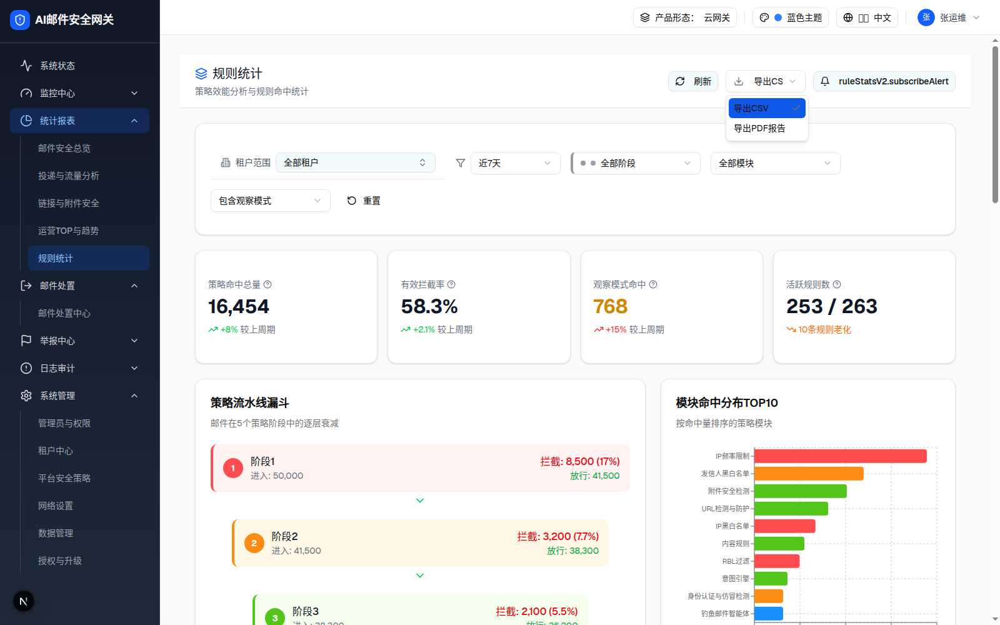

2.1 页面头部操作区
组件元信息
| demo 位置 | rule-stats-v2-page.tsx 846-880 行（页面内嵌，非独立组件） |
| 状态管理 | isLoading（刷新按钮 1s 假加载）；导出 Select 为非受控 defaultValue="csv" |
| 交互层级数 | 1 层 |
0 交互层级 0：初始态（默认渲染）
触发路径：页面加载即渲染。预览区内：点击「导出CS」触发下拉（复刻 demo 选项）；点击「刷新」复刻 1s 旋转禁用态；「订阅告警」在 demo 中无绑定行为（hover 查看说明）。
规则统计
策略效能分析与规则命中统计

| 序号 | 元素 | 文案/图标 | 默认值 | 禁用条件 | 交互行为 | i18n key |
|---|---|---|---|---|---|---|
| 1 | 标题行 | Layers(20px, text-blue-600) + 「规则统计」(text-xl font-medium) | - | - | 无 | ruleStatsV2.pageTitle |
| 2 | 副标题 | 「策略效能分析与规则命中统计」(text-sm text-gray-500) | - | - | 无 | ruleStatsV2.pageSubtitle |
| 3 | Button(outline sm) | RefreshCw(16px) + 「刷新」 | - | isLoading 时 disabled + 图标 animate-spin | 点击 → setTimeout 1000ms 解除；无真实数据刷新（§9-D11） | common.refresh |
| 4 | Select(w-32) | Download(16px) + 当前值 | csv（显示「导出CSV」，被 w-32 截断为「导出CS」§9-D5） | - | 选项：导出CSV / 导出PDF报告；选择仅改值，demo 未绑定导出动作 | ruleStatsV2.exportCSV / exportPDF |
| 5 | Button(outline sm) | Bell(16px) + 「ruleStatsV2.subscribeAlert」原始 key | - | - | demo 无绑定行为；文案 key 在 zh/en/th 语言表中均不存在（存在的是 alertSettings=告警设置，§9-D2） | ruleStatsV2.subscribeAlert（缺失） |
DOM 树比对结果（层级 0 · 页面头部）
| 比对项 | demo 实际 DOM | 提取的 HTML | 是否一致 |
|---|---|---|---|
| 根节点 | div.bg-white.border-b（class 前 60 字符：bg-white dark:bg-gray-800 border-b border-gray-200 dark:bord…） | 同左（outerHTML 原样嵌入） | ✅ |
| 节点总数 | 29 | 29 | ✅ |
| 右侧操作数 | 3（刷新 / 导出 Select / 订阅告警） | 3 | ✅ |
| 「订阅告警」文案 | 渲染为原始 key ruleStatsV2.subscribeAlert | 同左（如实保留，缺陷记入 §9-D2） | ✅ |